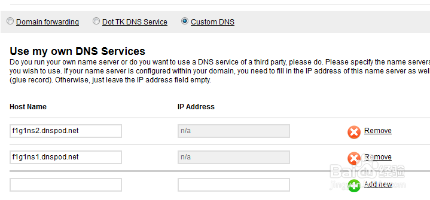

将域名绑定到github pages 博客上
-
1.添加CNAME文件
在仓库根目录下添加一个CNAM文件，没有后缀名，里面内容为你的域名(如:test.com),不需要添加http/www等前缀。
-
2.在小黑窗 $ping username.github.io记录下IP地址
-
3.添加 DNS Service记录去阿里云注册个账号，买个域名，设置两个A记录。分别是@和www，ip地址填上个步骤获取的IP地址。
-
4.设置域名的DNS（可忽略）
在相应域名的Csutom DNS里，设置DNS service,添加两条记录f1g1ns1.dnspod.net和f1g1ns2.dnspod.net
 -
5.漫长的等待
要全球解析生效，得等上一会了，也可以先ping一下自己的设置对不对。
------->>本·文·完